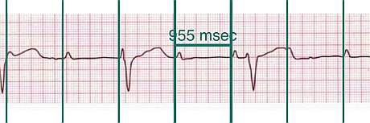
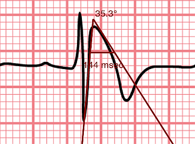

Quick start
When EP Calipers starts, a sample ECG and a time caliper are loaded. Move the caliper around by touching the caliper's crossbar and dragging it with your finger. Expand and contract the caliper by putting your finger on either vertical bar and dragging. Pinch and zoom the underlying ECG image as needed to enlarge or shrink it. If the ECG is bigger than your screen, you can drag the image around with your finger to choose a place to measure. Calibrate a caliper to make measurements.
Loading an image
There are several ways to load an ECG image.
- Take a photo of an ECG
- Select a photo from your photos collection
- Select an image or PDF from your files (iOS)
- Select a photo or PDF using the Share menu from other apps
AliveCor
To view ECGs in the AliveCor Kardia app, select Journal, then Share for the specific saved ECG you want to view. After selecting the Share button, select PDF from the options that appear. Then select Share and open the PDF with EP Calipers.
Adjusting the image
You can adjust the positioning of the image using pinch-to-zoom gestures and finger scrolling. Long press on the image to bring up a menu that allows you to rotate the image and change pages if you have loaded a PDF.
Lock the image in place
When moving and adjusting calipers, you may sometimes inadvertently move the underlying image. Select Lock to lock the image in place. A message appears at the top of the screen indicating the image is locked. Unlock the image by selecting Unlock.
Moving calipers
Drag the crossbar of a caliper to move it as a unit. Drag the left or right bars (or top or bottom in the case of amplitude calipers) to stretch or shrink the calipers. Angle calipers are moved as a unit by dragging at the apex or just above the apex of the angle.
Adding and deleting calipers
Select + to add new calipers. Select Time, Amplitude, or Angle to add the type of caliper you want. Double-tap a caliper to delete it.
Selecting a caliper
When more than one caliper is present, it is necessary that one is selected to be the active caliper when calibrating or making calculated measurements. By default an unselected caliper is blue and a selected caliper is red. You can change these colors using app preferences. It is also possible to change individual caliper colors. Single tapping an unselected caliper will select it. Tap it again (but not too fast, as a double tap deletes the caliper) to unselect it.
More caliper options
Tweak caliper position
Long press a caliper and select Tweak from the menu. Then long press a caliper component (crossbar, sidebar, or, in case of an angle caliper, the apex of the angle) and a menu with movement buttons will appear. Buttons with left and right or up and down arrows move the selected caliper component or the whole caliper using micromovements. You can move either sidebar (or either angle of an angle caliper) or a caliper as a whole by gradations of a single point (≈ pixel) or a tenth of a point, depending on which type of arrow you press (⇨ or →). Press the Done button to return to the main menu.
Marching calipers

Figure 1: Marching calipers
Long press a caliper and select March to convert a time caliper to a marching caliper. Vertical caliper lines will appear equal to the caliper width on either side of the caliper. This is very useful to assess the regularity or irregularity of a rhythm, or to detect P waves marching through a tachycardia or during heart block. Select March again to change the marching caliper back to normal again.
Calibration
Select Calibrate. Stretch the selected caliper over a known interval (such as 1000 msec for time, or 10 mm for amplitude calipers). Select Set. In the dialog box, make sure the interval matches what you are measuring. Enter both the calibration interval and units (e.g. 500 msec, or 1 sec, or 1 mV). Select Set in the dialog box to set the calibration. Note that time and amplitude calipers need to be calibrated separately. Once calibrated, calipers will show intervals in the units used to calibrate. Newly created calipers will use the same calibration. Angle calipers do not need to be calibrated. However, after calibration of time and amplitude calipers, angle calipers can be used as a Brugadometer.
Changing calibration
You can recalibrate at any time. You can clear all calibration by selecting Clear in the calibration toolbar. Note that calibration is maintained if the device is rotated or the image is zoomed. Selecting a new image will reset calibration.
Making measurements
The interval measured by time or amplitude calipers is displayed on top of or next to the crossbar of the caliper. Until these calipers are calibrated, measurements are displayed in arbitrary units (points, roughly equivalent to screen pixels). Angle calipers show a measurement of the current angle in degrees and do not need to be calibrated to display angles.
Interval/Rate
Once a time (horizontal) caliper is calibrated, provided you use time units (such as msec or sec) for the calibration, it is possible to toggle between interval measurements (e.g. 600 msec) and heart rate measurements (e.g. 100 bpm) by selecting Interval/Rate on iPads (or Int/Rate on iPhones).
Mean rate and interval calculation
Select a calibrated caliper and stretch it over a number of intervals. Select Mean Rate and enter the number of intervals measured. A dialog box will show the calculated mean heart rate and interval. This is useful for calculating rates and intervals in irregular rhythms, such as atrial fibrillation.
QTc calculation
Select QTc. Stretch the selected caliper over one or more RR intervals and select Measure. Enter the number of intervals the caliper is stretched over and select Continue. Then use the same caliper to measure the QT interval. Select Measure. A dialog box will give the calculated QTc using Bazett's formula by default. Select Repeat QT to make another QT measurement using the same measured RR interval. Select Done to finish measuring the QTc. You can change the QTc formula using app preferences.
Brugadometer

Figure 2: Brugadometer showing triangle base 5 mm below apex of caliper
The Brugadometer is a diagnostic tool for Brugada syndrome developed in collaboration with Dr. Adrian Baranchuk and his colleagues at Queen's University Kingston, Ontario, Canada. It is a tool intended to distinguish between ECGs with a Brugada syndrome pattern in leads V1 or V2 and ECGs with incomplete right bundle branch block. This tool is under development in EP Calipers and will likely evolve in future updates. In order to use the Brugadometer, it is necessary to calibrate an amplitude caliper in millimeters (mm) and to calibrate a time caliper preferably in msec or mm. After doing so, an angle caliper will appear to have a triangle at its apex. The triangle base will be located 5 mm below the apex of the triangle. Proper alignment of this triangle with an r' wave in a person with a suspected Brugada ECG will provide measurement of the so-called beta angle and the triangle base. A triangle base > 160 msec (4 mm at standard ECG recording speed of 25 mm/sec) has an increased probability of being a Brugada ECG. Please see de Luna AB, Garcia-Niebla J, Baranchuk A. New electrocardiographic features in Brugada syndrome. Curr Cardiol Rev. 2014 Aug; 10(3): 175-180 for further information.